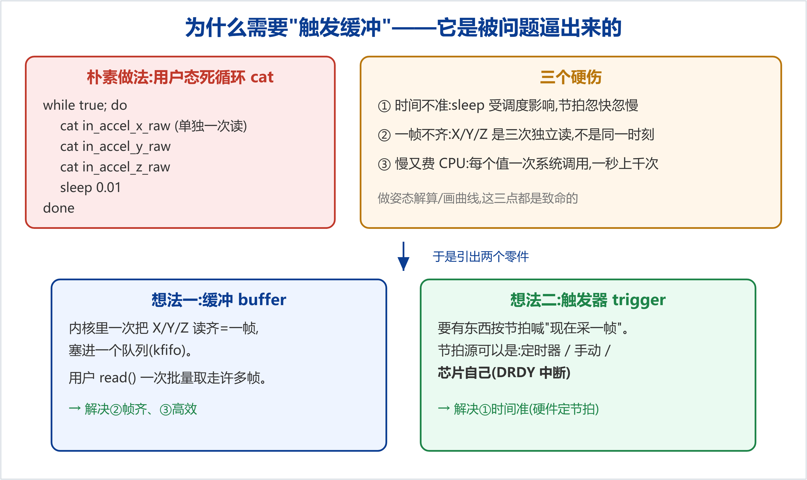
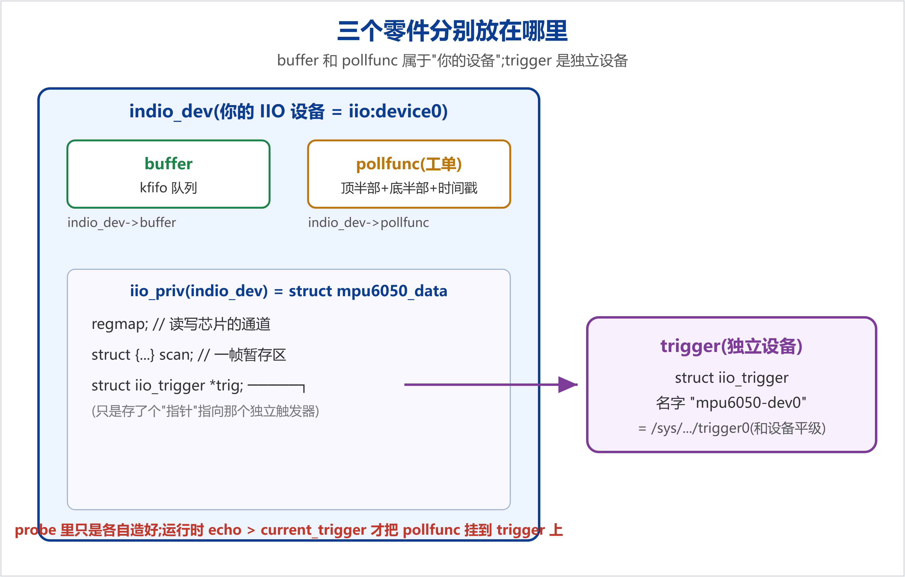
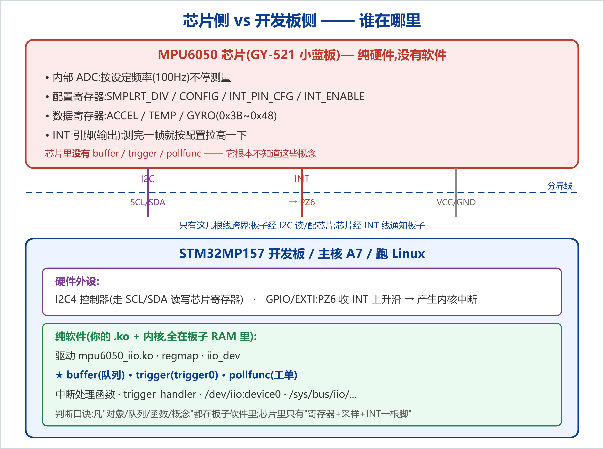
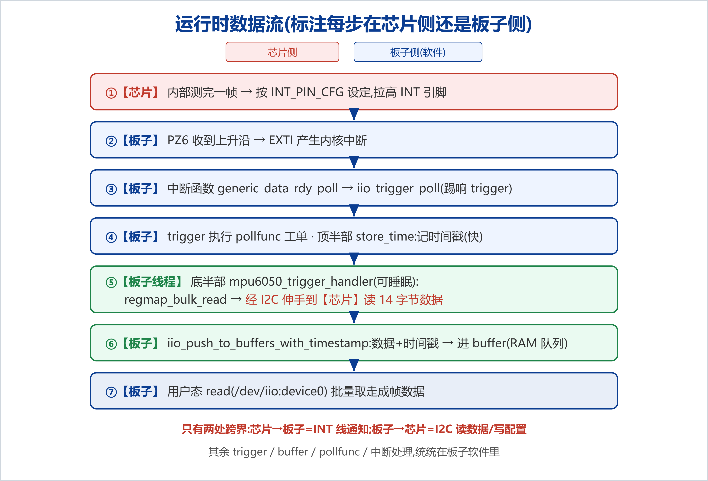

本文把"单次读(cat in_accel_x_raw)"之外的流式采集能力讲透:它依赖两个核心机制——触发器(trigger)与触发缓冲(triggered buffer),数据由芯片的 DRDY(数据就绪)硬件中断驱动,经 /dev/iio:deviceN 成帧输出。全文按"为什么需要 → 三个概念 → 零件归属 → 芯片侧vs板子侧 → 硬件接线 → 软件三件事 → 运行时数据流 → 上板验证 → 面试要点"的逻辑展开。
需求很朴素:连续不断地拿到传感器数据(如每 10ms 一帧)去画曲线、做姿态解算。最先想到的是用户态死循环 cat,但它有三个硬伤,正是这三个问题逼出了缓冲与触发器两个零件。

| 问题 | 后果 | 对应的解法 |
|---|---|---|
| ① 时间不准 | sleep 受调度影响,节拍忽快忽慢 | 让硬件定节拍(触发器 + DRDY 中断) |
| ② 一帧不齐 | X/Y/Z 三次独立读,不是同一时刻,拼不出真实姿态 | 内核一次把一帧读齐,塞进队列(缓冲) |
| ③ 慢且费 CPU | 每个值一次系统调用,一秒上千次 | 攒成批,用户一次取走(缓冲) |
内核里一个 kfifo 队列:每来一帧(X/Y/Z… 连续一次读齐)就入队,用户 read() 一次批量取走许多帧。它的出口是 /dev/iio:device0,buffer/length 是队列深度。解决"帧齐"和"高效"。
一个决定何时采的节拍源。节拍可来自:内核定时器、人工 sysfs、或芯片自己(DRDY 中断)。本项目用 DRDY:芯片真正测完一帧才拉 INT 脚通知,采集节拍与芯片采样完美同步,时间最准。它在系统里是独立设备 /sys/bus/iio/devices/trigger0,名字 mpu6050-dev0。
struct iio_poll_func 是一张工单:节拍一到,照着它干活。它本身不产生节拍、也不是队列,是二者之间的胶水,记了四样东西:
struct iio_poll_func {
irqreturn_t (*h)(...); // 顶半部 = iio_pollfunc_store_time(记时间戳)
irqreturn_t (*thread)(...); // 底半部 = mpu6050_trigger_handler(读数据→塞缓冲)
struct iio_dev *indio_dev; // 回指:这单子属于哪个设备
s64 timestamp; // 顶半部记下"这一刻",底半部拿去用
};
关键区别:buffer 和 pollfunc 属于"你的设备"(挂在 indio_dev 下);trigger 是独立设备。

| 零件 | C 结构 | 指针存在哪 | 谁创建 | 系统里露头处 |
|---|---|---|---|---|
| 缓冲 | struct iio_buffer | indio_dev->buffer | devm_iio_triggered_buffer_setup | iio:device0/buffer/、/dev/iio:device0 |
| pollfunc | struct iio_poll_func | indio_dev->pollfunc | 同上(一起造) | 无独立 sysfs(内部胶水) |
| 触发器 | struct iio_trigger | data->trig + 注册进触发器子系统 | devm_iio_trigger_alloc | 独立的 trigger0 |
三者在 probe 时只是各自造好;真正把 pollfunc "插"到触发器上是运行时:echo mpu6050-dev0 > .../trigger/current_trigger 这一刻,IIO 才把 indio_dev->pollfunc 挂进触发器的消费者列表。这也是 ls /sys/bus/iio/devices/ 会看到 iio:device0 和 trigger0 两个平级条目的原因。
一句话结论:buffer / trigger / pollfunc 全部在开发板(STM32MP157 主核)这边,是内核 RAM 里的软件对象;MPU6050 芯片里一个都没有。芯片里只有:配置寄存器 + 数据寄存器 + 内部采样 + 一根 INT 引脚。

regmap_write(..., SMPLRT_DIV, 0x09) 这类语句——执行代码的是板子 CPU(软件),但它经 I2C 伸手去改芯片内部的寄存器,结果落在芯片里。即"配置动作在板子发起,配置结果存在芯片"。这正是"驱动是桥"的含义。跨越分界线的只有两处:芯片→板子是 INT 线(芯片喊"我好了");板子→芯片是 I2C 读/写(板子去读数据、去配置)。其余所有概念都在板子软件里,芯片对它们一无所知。
GY-521 模块的 INT 脚(数据就绪输出)此前悬空,需用一根线接到板子一个空闲 GPIO。本板(正点原子 ATK-DLMP157 V1.5)扩展排针 JP1 上:
接线:模块 INT ──► JP1 第 28 脚(PZ6)。MPU6050 的 INT 默认推挽、高有效、50µs 脉冲,自带驱动能力,不需外接上/下拉电阻;且是"模块输出→SoC 输入",接错也不会烧,最坏是收不到中断。
在 mpu6050@68 节点加两行(PZ6 属 GPIOZ,运行时已确认该 bank 使能,line 6):
mpu6050@68 {
compatible = "alientek,mpu6050";
reg = <0x68>;
interrupt-parent = <&gpioz>; /* 中断挂在 GPIOZ 控制器上 */
interrupts = <6 IRQ_TYPE_EDGE_RISING>; /* 第6号线=PZ6;上升沿触发 */
};
<6 ...> 的 6 是组内线号(PZ6 → 6),不是全局 gpio 号 406。编好 dtb 拷到 TFTP 目录,重启生效。之后 i2c 核心会自动把该中断号填进驱动的 client->irq。
| 寄存器(值) | 作用 | 为什么这么设 |
|---|---|---|
| CONFIG=0x03 (0x1A) | DLPF 数字低通滤波 | DLPF_CFG=3:带宽约 44Hz 滤噪,且把基准频率定为 1kHz |
| SMPLRT_DIV=0x09 (0x19) | 采样率分频 | 采样率 = 1000/(1+9) = 100Hz(每 10ms 一帧,拉一次 INT) |
| INT_PIN_CFG=0x00 (0x37) | INT 引脚电气特性 | 全 0 = 高有效 + 推挽 + 50µs 脉冲 → 对应设备树的上升沿、免上拉、免清中断 |
| INT_ENABLE=0x00 (0x38) | 中断使能开关 | 先全关;等用户开缓冲时由 set_trigger_state 把 bit0(DATA_RDY)置 1,实现"按需开中断" |
probe 里造三个零件,靠触发器这个"中枢"连起来:
/* ① 建触发缓冲:顶半部记时间戳,底半部=handler 读数据 */
devm_iio_triggered_buffer_setup(&client->dev, indio_dev,
iio_pollfunc_store_time, mpu6050_trigger_handler, NULL);
/* ② 建 DRDY 触发器,并把 indio_dev 藏进去备用 */
data->trig = devm_iio_trigger_alloc(&client->dev, "%s-dev%d",
indio_dev->name, indio_dev->id);
data->trig->ops = &mpu6050_trigger_ops; /* 带开关 set_trigger_state */
iio_trigger_set_drvdata(data->trig, indio_dev);
/* ③ 申请中断:INT上升沿 → generic_data_rdy_poll → 踢触发器 */
devm_request_irq(&client->dev, client->irq,
iio_trigger_generic_data_rdy_poll, /* 中断来了只做一件事:踢 trig */
IRQF_TRIGGER_RISING, "mpu6050_drdy",
data->trig); /* ★把触发器当私有数据传入 */
连接关系:触发器是中枢,两头被接上——③把物理中断接成它的"上游节拍源"(靠传入 data->trig),①的 pollfunc 在运行时接成它的"下游消费者"。set_drvdata 则让开关函数 set_trigger_state 能从 trig 找回 indio_dev → 再到 regmap 去写芯片 INT_ENABLE。

底半部 mpu6050_trigger_handler 的核心:一次连续读 14 字节(AX,AY,AZ,TEMP,GX,GY,GZ),连同时间戳推进缓冲:
regmap_bulk_read(data->regmap, MPU6050_REG_ACCEL_XOUT_H,
data->scan.chans, sizeof(data->scan.chans));
iio_push_to_buffers_with_timestamp(indio_dev, &data->scan, pf->timestamp);
iio_trigger_notify_done(indio_dev->trig);
其中 scan 暂存区的 scan_index 与寄存器连续读顺序一致(0=AX…6=GZ,7=时间戳),时间戳按 8 字节对齐放尾部;各通道 scan_type 为 16 位、有符号、大端(芯片高字节在前)。
cd /sys/bus/iio/devices/iio:device0 echo mpu6050-dev0 > trigger/current_trigger # 把触发器绑给缓冲 echo 1 > scan_elements/in_accel_x_en # 选通道:accel x/y/z + 时间戳 echo 1 > scan_elements/in_accel_y_en echo 1 > scan_elements/in_accel_z_en echo 1 > scan_elements/in_timestamp_en echo 64 > buffer/length echo 1 > buffer/enable # 开缓冲(此刻才打开芯片DRDY中断) cat /proc/interrupts | grep mpu6050_drdy # 关键证据:计数应 ~100/秒 在涨 timeout 1 hexdump -C /dev/iio:device0 | head # 成帧二进制数据 echo 0 > buffer/enable
mpu6050_drdy 中断计数 1 秒涨约 100 → 证明是硬件中断在驱动采集,不是软件轮询;② hexdump 源源不断出数据 → /dev/iio:device0 成帧输出打通。每帧 16 字节 = AX/AY/AZ(各2字节有符号大端)+ 2 字节填充 + 8 字节时间戳(ns)。iio_trigger_poll 踢一下(极短);真正读 I2C(会睡眠)放底半部线程。set_trigger_state 才打开,省电不扰系统。本文为 MPU-6050 IIO 驱动学习的进阶篇(触发缓冲 + 硬件中断),基于真实上板实战整理。配套代码见仓库examples/learning-driver/与drivers/iio/imu/mpu6050/;系列文档见docs/learning/。仓库:github.com/fyy0619-cell/xiangmu